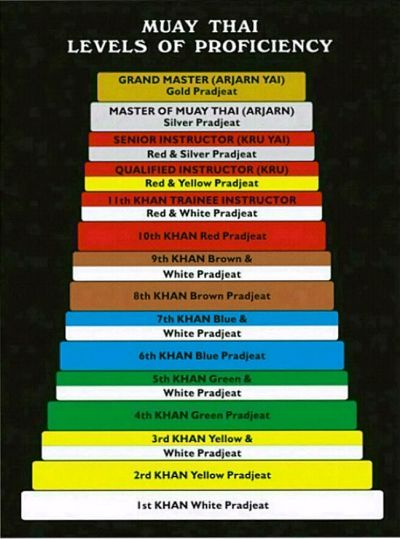

Muay-Thai
La Etica
Hacerse a uno mismo útil a la sociedad.
Ser cortés y educado con todos cada vez que sea posible.
No ser violento en su palabra, pensamientos o acciones, construir el caracter.
Ser fiel a sí mismo y con los demás.
Mostrar perseverancia cuando sea posible.
Estar dispuesto a sacrificarse por el bien de tu país, o comunidad si es necesario.
Tener una fuerte disposición y determinación (“tan fuerte como el acero, tan duro como el diamante”).
Llevar la moral en alto, no dar cabida a la tristeza.
Tener buen cuidado de su nombre y de su campo de entrenamiento.
Entrenar y ejercitarse regularmente.
No tomar ventaja de tu oponente infringiendo las reglas de competencia.
Mostrar respeto a la naturaleza y a sus leyes.
Tecnicas
Guardia
Puños
| Jab |
cross |
Hook |
Swing |
Backfist |
Uppercut |
Cobrapunch |
| หมัดหน้า/หมัดแย็บ |
หมัดตรง |
คนบ้า |
หมัดเหวี่ยงยาว |
หมัดเหวี่ยงกลับ |
หมัดเสย/หมัดสอยดาว |
กระโดดชก |
Codos
| Codo descendente en diagonal |
Codo horizontal |
Codo ascendente/uppercut |
Codo en giro |
Codo horizontal de reversa |
Codo doble cantante |
Codo con paso hacia adelante |
Codo en salto |
| ศอกตี (ศอกสับ) |
ศอกตัด |
ศอกงัด |
ศอกกลับ |
ศอกเหวี่ยงกลับ (ศอกกระทุ้ง) |
ศอกกลับคู่ |
ศอกพุ่ง |
กระโดดศอก |
Patadas
| Barrido |
patada al muslo |
patada circular |
Patada de tibia y rodilla |
Patada giratoria |
Patada circular con presión |
Patada hacha o vertical descendente |
patada en salto |
patada escalando/pisando el muslo |
| เตะตรง |
เตะตัด |
เตะเฉียง |
เตะครึ่งแข้งครึ่งเข่า
เตะกลับหลัง |
เตะกด |
เตะเข่า |
กระโดดเตะ |
เขยิบเตะ |
Rodillasos
| rodillazo recto |
rodillazo diagonal |
rodillazo redondo |
rodillazo horizontal |
rodillazo lateral |
rodillazo bomba |
rodillazo volador |
rodillazo escalando/pisando el muslo |
| เข่าตรง |
เข่าเฉียง |
เข่าโค้ง |
เข่าตัด |
เข่าตบ |
เข่ายาว |
| เข่าลอย |
เข่าเหยียบ |
Defensa contra ataques
| Bloqueo - cubrir con una parte del cuerpo dura otra más sensible.
|
Redirección - paradas suaves para cambiar la dirección del golpe.
|
Esquiva - mover una parte del cuerpo del trayectoria o alcance del golpe.
|
Evasión - mover el cuerpo fuera de la trayectoria o alcance del golpe.
|
Interrupción - adelantarse al ataque golpeando al oponente cuando trata de cerrar la distancia.
|
Anticipación - atrapar el golpe o atacar mientras se lanza.
|
Cinturones
